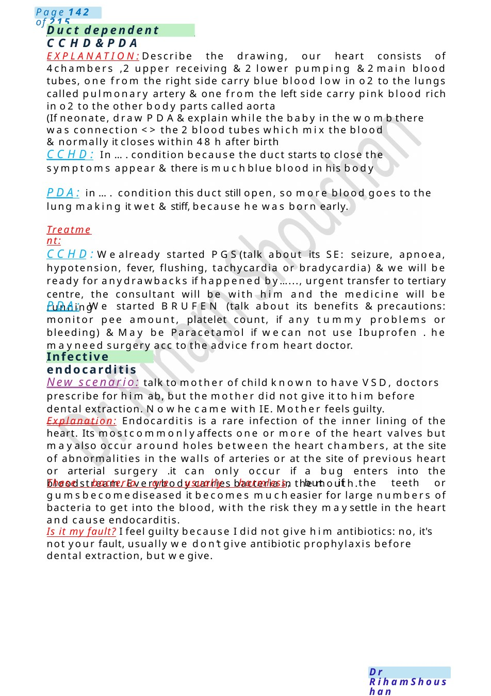
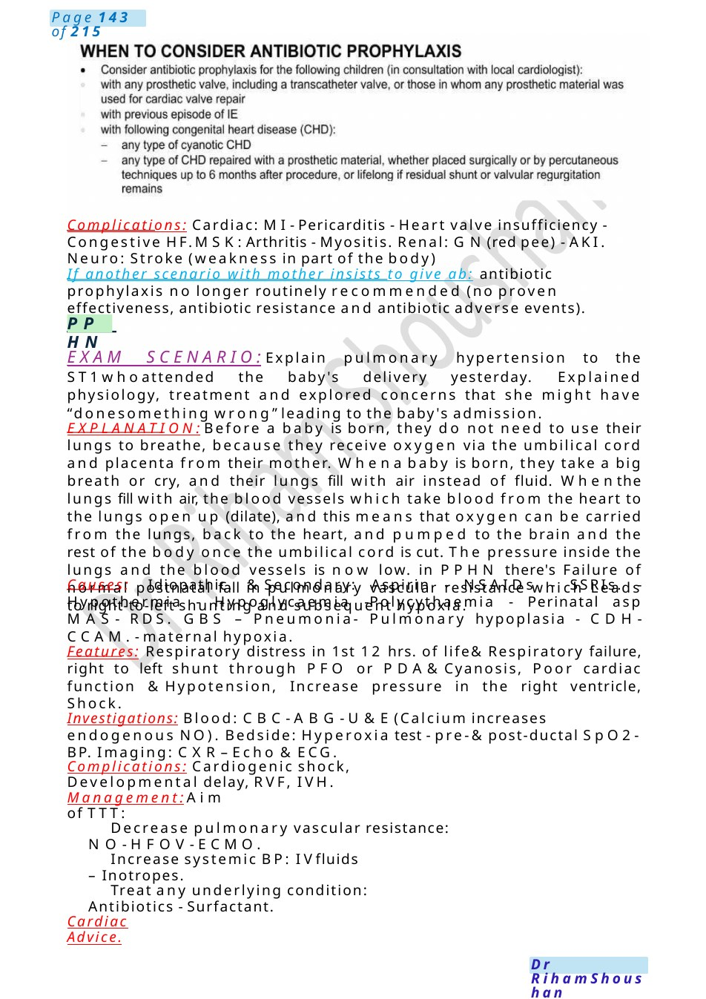

Duct dependent CCHD&PDA
EXPLANATION:Describe the drawing, our heart consists of 4chambers ,2 upper receiving &2 lower pumping &2main blood tubes, one from the right side carry blue blood low in o2 to the lungs called pulmonary artery &one from the left side carry pink blood rich in o2 to the other body parts called aorta (If neonate, draw PDA&explain while the baby in the wombthere was connection <> the 2 blood tubes which mix the blood &normally it closes within 48 h after birth
Scenario Summary
EXPLANATION:Describe the drawing, our heart consists of 4chambers ,2 upper receiving &2 lower pumping &2main blood tubes, one from the right side carry blue blood low in o2 to the lungs called pulmonary artery &one from the left side carry pink blood rich in o2 to the other body parts called aorta (If neonate, draw PDA&explain while the baby in the wombthere was connection <> the 2 blood tubes which mix the blood &normally it closes within 48 h after birth
Full Original Scenario

Duct dependent CCHD&PDA
Infective endocarditis
EXPLANATION:Describe the drawing, our heart consists of 4chambers ,2 upper receiving &2 lower pumping &2main blood tubes, one from the right side carry blue blood low in o2 to the lungs called pulmonary artery &one from the left side carry pink blood rich in o2 to the other body parts called aorta
(If neonate, draw PDA&explain while the baby in the wombthere was connection <> the 2 blood tubes which mix the blood &normally it closes within 48 h after birth
CCHD: In ....condition because the duct starts to close the symptoms appear &there is muchblue blood in his body
PDA: in .... condition this duct still open, so more blood goes to the lung making it wet &stiff, because he was born early.
Treatment:
CCHD:Wealready started PGS(talk about its SE: seizure, apnoea, hypotension, fever, flushing, tachycardia or bradycardia) &we will be ready for anydrawbacks if happened by......, urgent transfer to tertiary centre, the consultant will be with him and the medicine will be running
PDA: We started BRUFEN (talk about its benefits &precautions: monitor pee amount, platelet count, if any tummy problems or bleeding) &May be Paracetamol if wecan not use Ibuprofen . he mayneed surgery acc to the advice from heart doctor.
New scenario: talk to mother of child known to have VSD, doctors prescribe for him ab, but the mother did not give it to him before dental extraction. Nowhe came with IE. Mother feels guilty.
Explanation: Endocarditis is a rare infection of the inner lining of the heart. Its mostcommonlyaffects one or more of the heart valves but mayalso occur around holes between the heart chambers, at the site of abnormalities in the walls of arteries or at the site of previous heart or arterial surgery .it can only occur if a bug enters into the bloodstream. Everybody carries bacteria in the mouth.
These bacteria are usually harmless, but if the teeth or gumsbecomediseased it becomes mucheasier for large numbers of bacteria to get into the blood, with the risk they maysettle in the heart and cause endocarditis.
Is it my fault? I feel guilty because I did not give him antibiotics: no, it's not your fault, usually we don’t give antibiotic prophylaxis before dental extraction, but wegive.

PPHN
Complications: Cardiac: MI- Pericarditis - Heart valve insufficiency - Congestive HF.MSK:Arthritis - Myositis. Renal: GN(red pee) - AKI. Neuro: Stroke (weakness in part of the body)
If another scenario with mother insists to give ab: antibiotic prophylaxis no longer routinely recommended (no proven effectiveness, antibiotic resistance and antibiotic adverse events).
EXAM SCENARIO:Explain pulmonary hypertension to the ST1whoattended the baby's delivery yesterday. Explained physiology, treatment and explored concerns that she might have “donesomething wrong” leading to the baby's admission.
EXPLANATION:Before a baby is born, they do not need to use their lungs to breathe, because they receive oxygen via the umbilical cord and placenta from their mother. Whena baby is born, they take a big breath or cry, and their lungs fill with air instead of fluid. Whenthe lungs fill with air, the blood vessels which take blood from the heart to the lungs open up (dilate), and this means that oxygen can be carried from the lungs, back to the heart, and pumped to the brain and the rest of the body once the umbilical cord is cut. The pressure inside the lungs and the blood vessels is now low. in PPHN there's Failure of normal postnatal fall in pulmonary vascular resistance which Leads to right-to-left shunting and subsequent hypoxia.
Causes: Idiopathic. &Secondary: Aspirin - NSAIDs - SSRIs. - Hypothermia - Hypoglycaemia -Polycythaemia - Perinatal asp MAS- RDS. GBS – Pneumonia- Pulmonary hypoplasia - CDH-CCAM.- maternal hypoxia.
Features: Respiratory distress in 1st 12 hrs. of life& Respiratory failure, right to left shunt through PFO or PDA&Cyanosis, Poor cardiac function &Hypotension, Increase pressure in the right ventricle, Shock.
Investigations: Blood: CBC- ABG- U&E(Calcium increases endogenous NO). Bedside: Hyperoxia test - pre-& post-ductal SpO2- BP. Imaging: CXR– Echo &ECG.
Complications: Cardiogenic shock, Developmental delay, RVF, IVH.
Management:Aim of TTT:
Decrease pulmonary vascular resistance: NO- HFOV- ECMO.
Increase systemic BP: IVfluids – Inotropes.
Treat any underlying condition: Antibiotics - Surfactant.
Cardiac Advice.